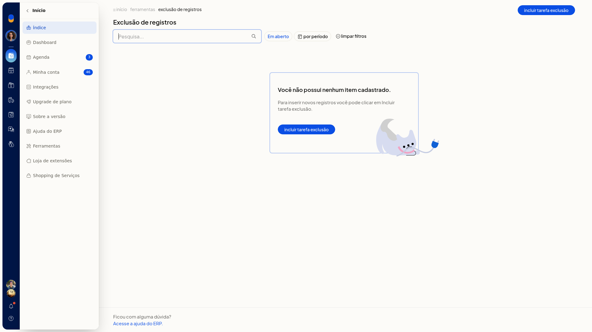

Exclusão de registros
Em Início > Ferramentas > Exclusão de registros, você agenda a exclusão definitiva de registros antigos no ERP da Olist. Você escolhe o conjunto e a data limite. O email informado recebe o aviso de conclusão da tarefa.
Importante
- A exclusão é definitiva.
- Faça um backup antes. A tela avisa isso e mostra um link para fazer backup.
Instruções
- Acesse Início > Ferramentas > Exclusão de registros.
- Na lista, use Pesquisa, Em aberto, por período ou limpar filtros quando precisar localizar uma tarefa.
- Clique em Incluir tarefa de exclusão.
- Preencha Descrição, E-mail e Quando. Esses campos não são obrigatórios. Em E-mail, informe o endereço que recebe o aviso de conclusão da tarefa.
- Escolha o conjunto de registros:
- Notas fiscais, com a opção NF-e de terceiros
- Recebimentos e Contas a Receber vinculadas ao recebimento
- Todos os registros de contas a receber
- Pagamentos e Contas a Pagar vinculadas ao pagamento
- Todos os registros de contas a pagar
- Pedidos de vendas
- Reservas de estoque
-
Informe Excluir registros anteriores à data. Esse campo não é obrigatório. Leia o aviso de exclusão definitiva e o link para fazer backup.

-
Clique em Salvar para agendar a exclusão. Para descartar, clique em Cancelar.